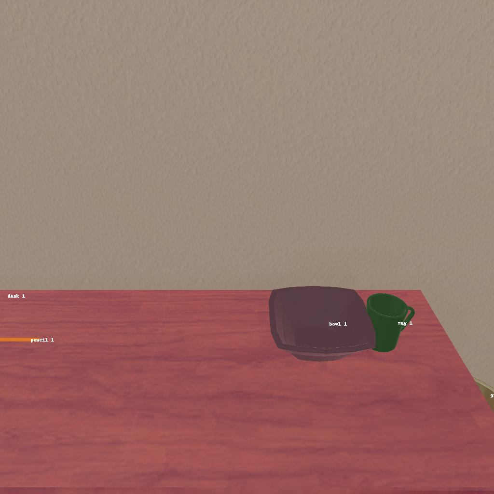

---------------------------------------------------------task: 2---------------------------------------------------------
--------------------------------------------------------------------------------------------------------------------------------------------------------------------
--------------------------------------------------------------------------------------------------------------------------------------------------------------------
Step:--------------------------------------------------------------------------12-------------------------------------------------------------------------------
----------------------------------------
VLM Prompt:
Image1:
**Instruction**
1. Analyze the provided image to identify all visible household objects, focusing on those relevant to the task description "look at pen under the desklamp."
2. Use the analysis of the image and the task hint "The agent must find an object of the desired type, locate and turn on a light source with the desired object in-hand." to answer the question: what is the most reasonable action in the choices for the task description "look at pen under the desklamp"?
4. Decide and write the answer using the template: The answer is: (i): , where i is the real number. If there is no desired object in the image, search every place based on **Initial Observation** to find the object. And if no one is exactly correct, choose a similar answer.
**Initial Observation**
You are in the middle of a room. Looking quickly around you, you can see bed (1-2), dresser (1), drawer (1-11), sidetable (1-2), desk (1), garbagecan (1), safe (1)
**Answer Choices**
(1): go to bed 1
(2): go to dresser 1
(3): go to bed 2
(4): go to drawer 1
(5): go to sidetable 1
(6): go to drawer 2
(7): go to sidetable 2
(8): go to drawer 4
(9): go to garbagecan 1
(10): go to drawer 5
(11): go to drawer 6
(12): go to drawer 7
(13): go to drawer 8
(14): go to drawer 9
(15): go to drawer 10
(16): go to drawer 11
(17): go to safe 1
(18): take bowl 1 from desk 1
(19): take mug 1 from desk 1
(20): take pencil 1 from desk 1
(21): examine desk 1
**Answer**
Let's think step by step by following the instructions.
----------------------------------------
----------------------------------------
Original Response:
- Firstly, we analyze the provided image. We see a desk (labeled as "desk 1") with a bowl (labeled as "bowl 1"), a mug (labeled as "mug 1"), and a pencil (labeled as "pencil 1"). There is no pen or desklamp visible in the image.
- The task description is "look at pen under the desklamp," which implies we need to find a pen and a desklamp.
- The hint provided tells us the agent must find an object of the desired type (in this case, a pen), locate and turn on a light source (presumably the desklamp) with the desired object in-hand.
Given the **Initial Observation**, there is no mention of a desklamp. However, a desk is mentioned and is a common place where one might find a desklamp. Since the image shows us the top of the desk and no pen or desklamp is visible, the next reasonable action would be to examine the desk further, as the pen could be in a drawer or under some object on the desk, and the desklamp could be on the side not visible in the image.
The answer is: (21): examine desk 1.
----------------------------------------
----------------------------------------
>>> Refine Original VLM Response and Get Pure Action: examine desk 1
----------------------------------------
-----------------------------------------------------------------
Running time: 11.768248081207275 seconds
Total Money: 0.6854600000000002
-----------------------------------------------------------------
-----------------------------------------------------------------
Text Observation:On the desk 1, you see a bowl 1, a mug 1, and a pencil 1.
-----------------------------------------------------------------
UNSUCCEED